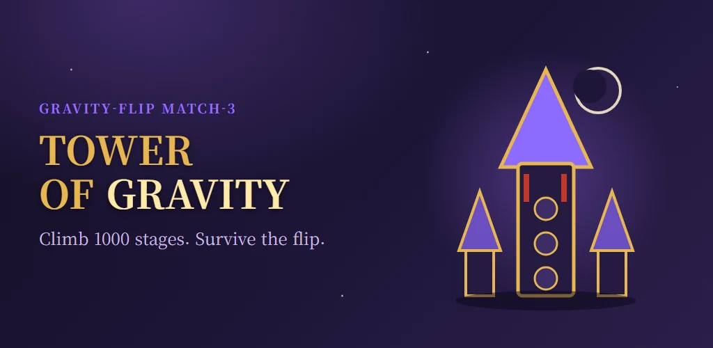
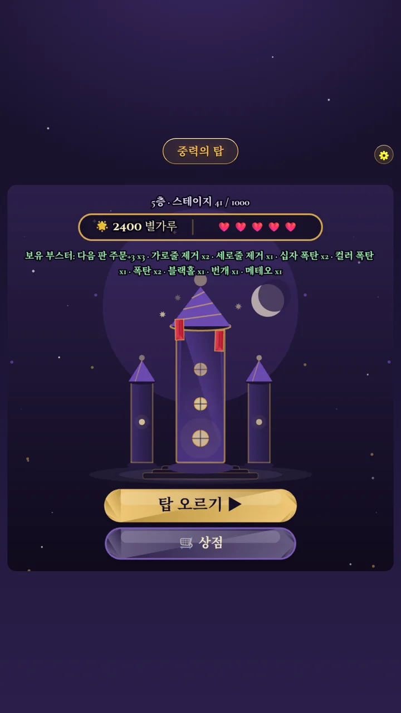
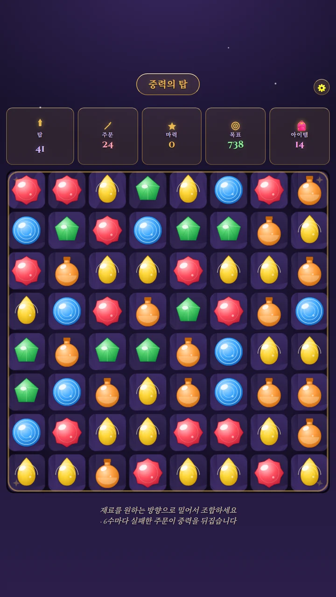
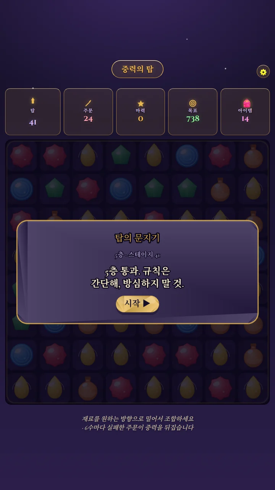
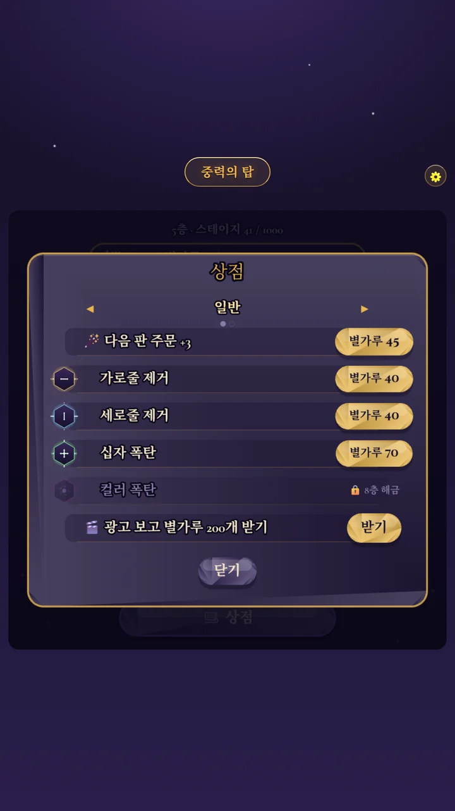
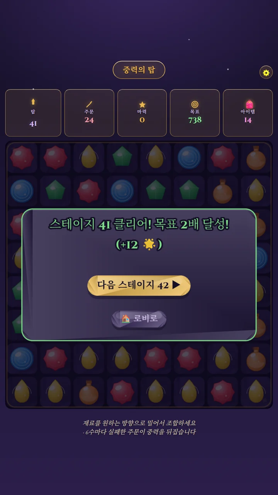

Top of
Gravity
중력이 등을 돌리는 탑. 한국어 스토어에서는 '중력의 탑'.

재료를 밀어 셋 이상을 맞추는 규칙은 익숙하다. 여기에 변수가 하나 얹힌다. 몇 수마다 중력이 아래에서 왼쪽으로, 위로, 오른쪽으로 돌아가며 뒤집히고, 그때마다 판 전체가 그 방향으로 쏟아진다.
판이 안정됐다 싶은 순간 모든 것이 다시 움직인다. 전환 주기는 위층으로 갈수록 짧아지고, 재료는 더 다양해지며, 판은 더 읽기 어려워진다. 지금 놓는 한 수가 중력이 돌아온 뒤에도 남아 있게 만드는 것, 그게 이 게임의 전부다.
- Platform
- Android
- Status
- Released
- Genre
- Match Puzzle
무료 · 보상형 광고는 직접 선택할 때만 재생됩니다.
- 01
중력 전환
몇 수마다 중력이 아래 → 왼쪽 → 위 → 오른쪽 순으로 뒤집히고, 보드 전체가 그 방향으로 재배치됩니다. 어떤 판도 오래 가만히 있지 않습니다.
- 02
특수 재료 4종
4매치는 가로·세로 줄 제거, L·T자 교차 매치는 십자 폭탄, 5매치 이상은 같은 색을 전부 지우는 컬러 폭탄이 됩니다. 별가루로 상점에서 사거나, 탑을 오르다 이벤트로 받습니다.
- 03
별가루와 상점
스테이지를 클리어하면 별가루가 쌓이고, 목표 점수의 두 배를 넘기면 보너스가 붙습니다. 다음 판 주문 +3이나 특수 재료를 미리 사 두면 험한 구간을 넘기기 수월해집니다.
- 04
하트
한 판에 하트 하나가 듭니다. 최대 다섯 개까지 모이고 15분마다 하나씩 다시 차오릅니다. 이동 수가 떨어지면 광고를 보고 더 받거나, 하트 하나를 쓰고 나갈 수 있습니다.
- 05
함께 오르는 다섯 안내자
늙은 사서, 도깨비불, 탑의 문지기, 먼지 요정, 견습 마법사. 층마다 다른 화자가 자기 말투로 이야기를 건네고, 30·60·80·95층의 전환점은 언제나 문지기가 선포합니다.
- 스테이지
- 100010스테이지가 한 층, 모두 100개 층
- 특수 재료
- 4줄 제거 둘, 십자 폭탄, 컬러 폭탄
- 안내자
- 5층수대로 말투가 달라지는 화자들
- 지원 언어
- 22설정에서 언제든 변경





맞추는 건 쉽습니다. 어려운 건 중력이 돌아온 뒤에도 그 수가 남아 있게 만드는 쪽입니다.
- 01
재료를 밀어 셋을 맞추세요
원하는 방향으로 밀어 같은 재료 셋 이상을 이으면 사라집니다. 넷 이상이면 특수 재료로 승격됩니다.
- 02
전환까지 남은 수를 보세요
상단의 주문 수가 다음 전환까지 몇 수가 남았는지 알려줍니다. 뒤집히면 보드 전체가 새 방향으로 쏟아지니, 지금 쌓은 모양이 그 뒤에도 남을지 먼저 가늠하세요.
- 03
특수 재료는 아껴 두세요
탭 두 번으로 바로 터뜨리거나, 옆 재료와 스왑하거나, 일반 매치에 휩쓸리게 할 수 있습니다. 중력이 뒤집힌 직후의 어지러운 판에서 가장 값어치를 합니다.
계정도 로그인도 없습니다. 오른 높이는 플레이한 기기에 남습니다.
진행한 스테이지, 보유 별가루, 하트 상태, 사 둔 특수 재료는 모두 기기 안에만 저장됩니다. 서버로 올라가는 것이 없으니 회원가입 절차도 없고, 저희가 그 기록을 들여다볼 방법도 없습니다.
글꼴까지 앱에 담아 네트워크가 없어도 첫 화면부터 제 모습으로 열립니다. 다만 앱을 삭제하거나 기기를 바꾸면 기록은 자동으로 복원되지 않습니다.
직접 누르는 보상형 광고만 있습니다. 끼어드는 광고는 없습니다.
- 01
전면광고도, 상시 배너도 없음
플레이 중 화면을 덮는 광고나 늘 자리를 차지하는 배너는 사용하지 않습니다.
- 02
보상은 직접 선택할 때만
별가루 충전, 하트 충전, 이동 수 추가는 "광고 보고 받기"를 직접 누른 경우에만 재생됩니다.
- 03
끝까지 봤을 때만 지급
중간에 닫거나 오프라인이면 보상이 지급되지 않습니다. 광고는 Google AdMob으로 동작합니다.